HDM Decoder
[toc]
HDM Decoder 是什么
device 不超过10个，switch and host bridge 不超过32个。
HDM Decoder 寄存器位于那里及如何访问
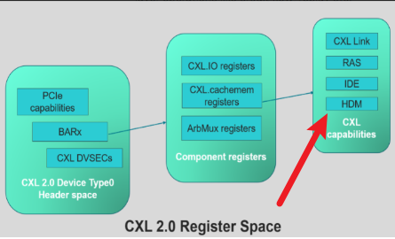
层级关系：
-
先找component register 基地址；
-
component register 第二个4K中；
- CacheMem primary range 区域中，有多个capability 寄存器组，每个寄存器组有一个ID；一个一个entry组成的数组，每个大小32字节。主要包括，ID，版本，指针等内容。
-
HDM decoder ID 是5；
-
HDM decoder Cap pointer 指向寄存器具体地址；
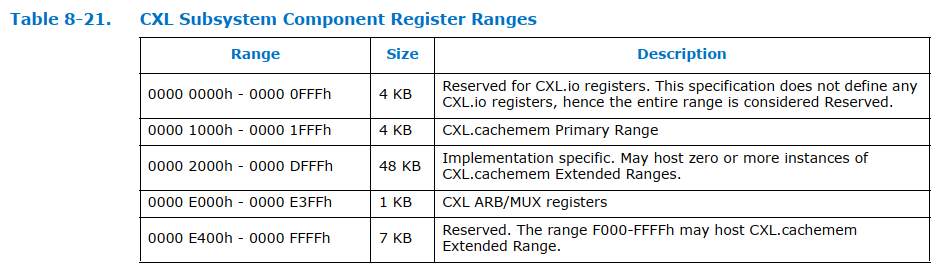
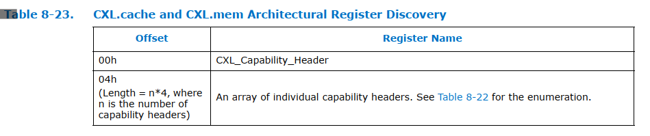
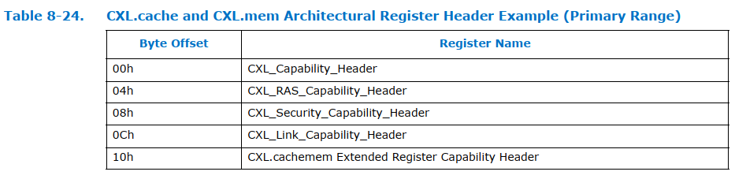
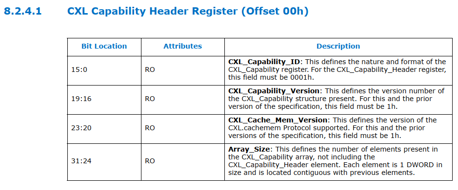
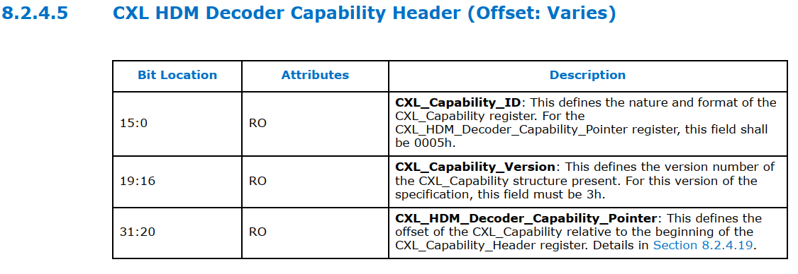
CXL HDM Decoder Capability Structure
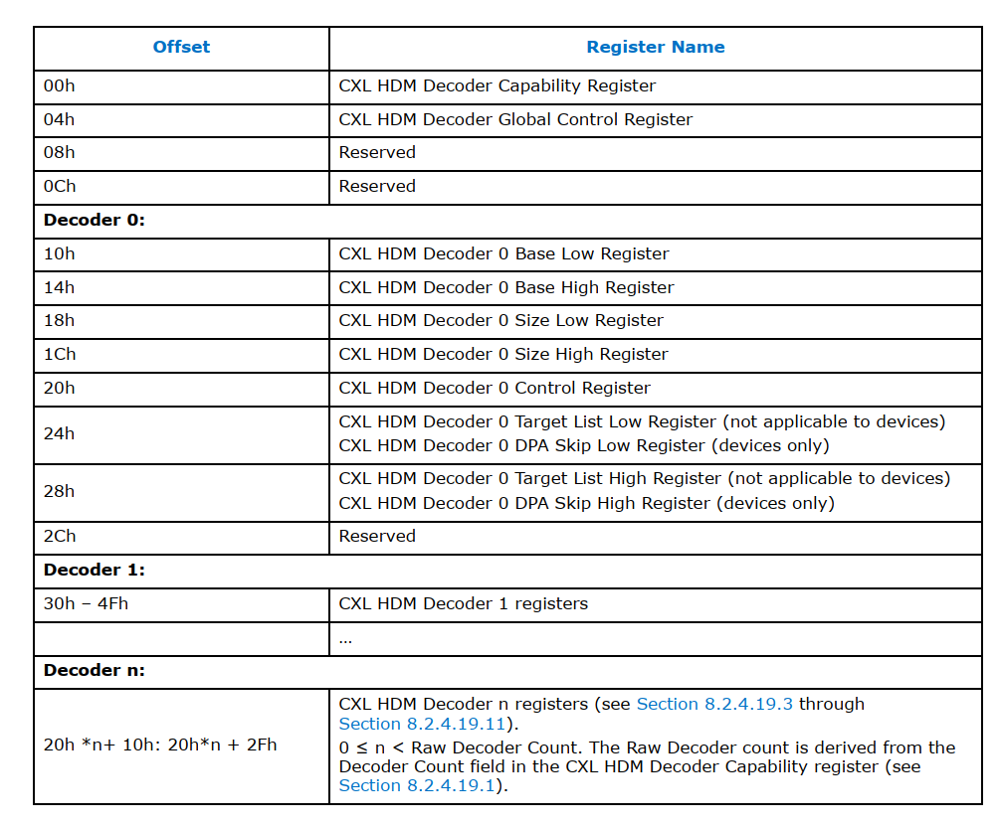
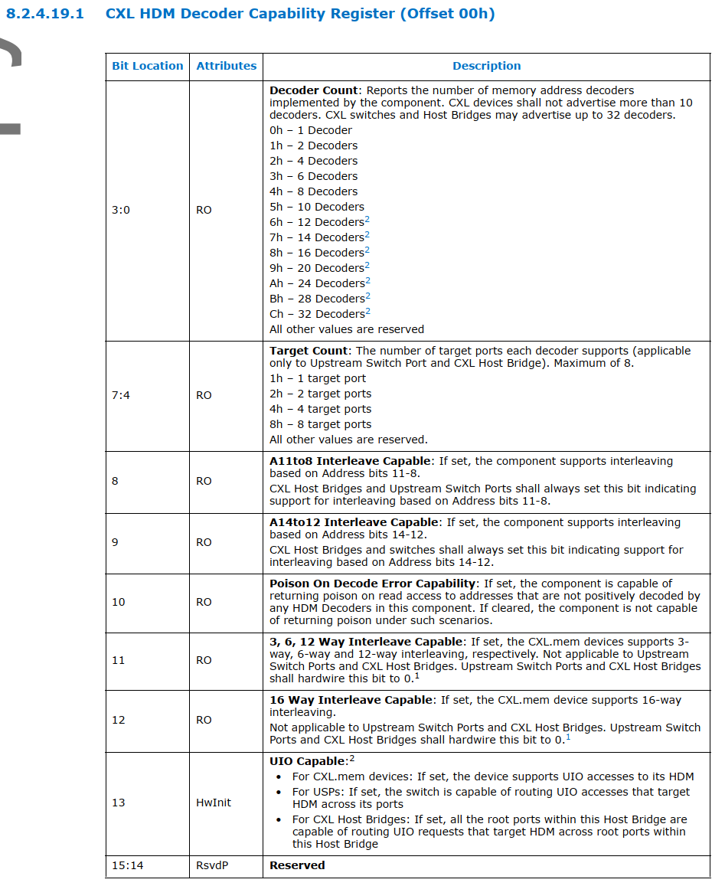
HDM Decoder 寄存器在枚举时候如何进行配置
需要用到DVSEC8，里面会存储多个寄存器的地址信息，每个寄存器有自己的ID。我们要找的component寄存器ID是1。
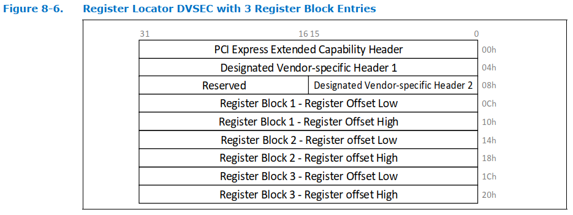
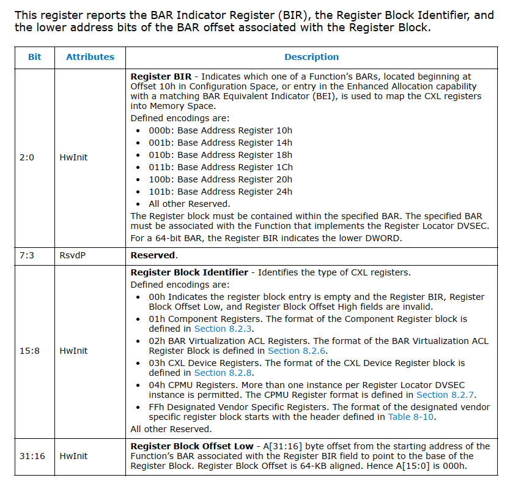
读HDM Decoder属性
// 先获取component寄存器的基地址
component_rerg_base = get_cxl_reg_block_base_address()
- 在配置空间中找到DVSEC8(reg locate)
- 在多个entry中找到ID为1的component reg
- 通过低三位可以看到放在哪个bar里了
- 然后读对应的bar reg，如ecam+0x14，判断是32bit还是64bit
- 这个时候，bar里已经分配好地址了，读出来，加上offset就是需要的地址了
- 把31：16的值加到上面读出来的bar值中，就得到了component寄存器的基地址
// component寄存器的基地址向下4K就是cacheMem寄存器区域
get_cxl20_device_info()
- 在这里搜索，找到hdm decoder header 和 cap reg 的位置
- 根据上面的例子，第一个应该是ID为1 的CXL cap，这里可以判断一下ID和版本号，这里也会表明有几个entry，一个entry header为DW。
- for 循环，从1到entry size，去找ID 等于5，也就是HDM ID的cap，也就找到了想要的东西，header的位置和cap的位置。
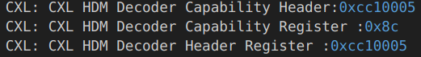
比如这个设备，他的HDM decoder header的内容就是
0xCC10005 = 11001100 0001 0000000000000101
可以确认：
低16位是 5，也就是ID 为 5；
bit16:19 是1，也就是版本为1；
bit20:31 是cc，也就是cap的offset是cc
读这个offset地址得到的内容是0x8c = 1000 1100
进一步解析：
bit3:0 是1100，说明decoder数目是1；
bit7:4 是1100，说明target count数目是8；
把这些信息存储到device对应的结构体中就好了。
HDM Decoder配置
在DVSEC 0 中收集一些size信息，然后根据base，size，填入decoder 寄存器中。
同时要配置一些控制寄存器，如decoder enable bit，interleave 控制位等。